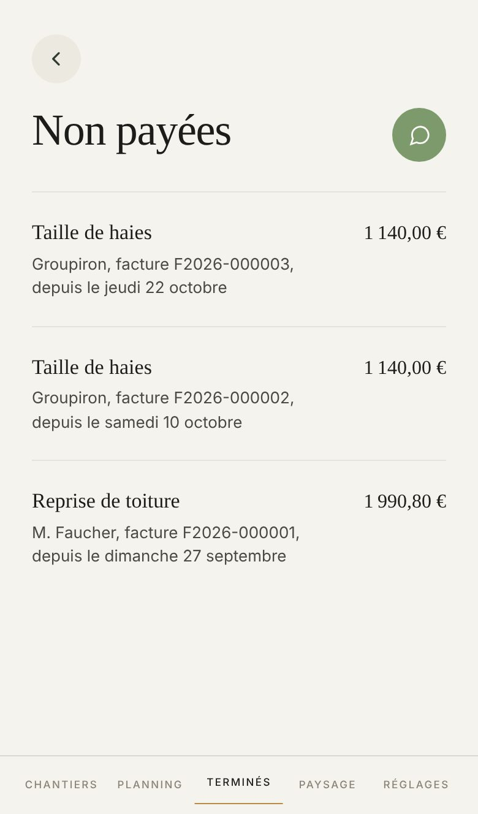
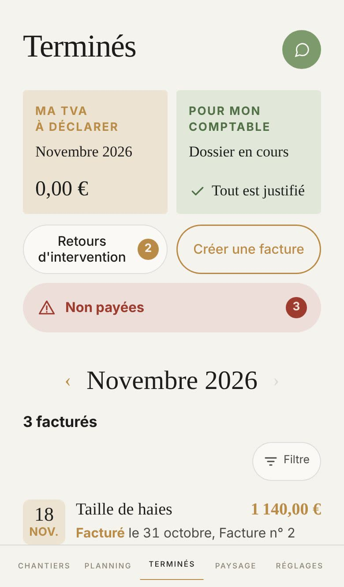

Proposé
Aujourd'hui

Où elle se trouve
Sur Terminés, le 1er novembre, après trois factures déclarées « il ne paiera pas » :

Ce qui change
- En tête, ce qui reste à recevoir : la somme des restes, sur une bande dorée comme Ma TVA.
- Chaque facture dans une plage, avec son chevron : on voit qu'elle s'ouvre.
- « Depuis le… » passe sur sa propre ligne, en encre douce et non plus en gris.
- Rien à recevoir : un signe et la même phrase, au milieu.
Ce qui ne bouge pas
- La plus récemment déclarée en haut, le chantier en titre, le client et le numéro, le reste à payer à droite.
- Toucher une ligne ouvre la facture du chantier.